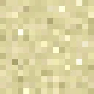
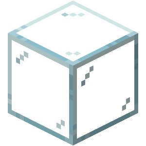
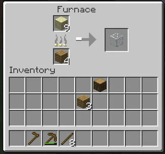
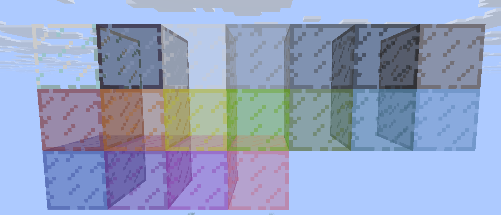

arena en un horno
horno
El bloque de cristal es un bloque usado principalmente en la construcción, pero tambien es usado comunmente en las granjas y en la redstone por su propiedad de no poder aparecer ningun mob ni dejar pasar la señal de redstone.
Este bloque se obtiene colocando  horno

El bloque de cristal se rompe facilmente con la mano, sin embargo, si quieres recuperar el bloque necesitas una herramienta con toque de seda
Existen distintas variantes del bloque de cristas, estas variantes simplemente cambia el color:

Estas variantes se consiguen poniendo un cristal y un tinte en una mesa de crafteo.